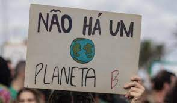
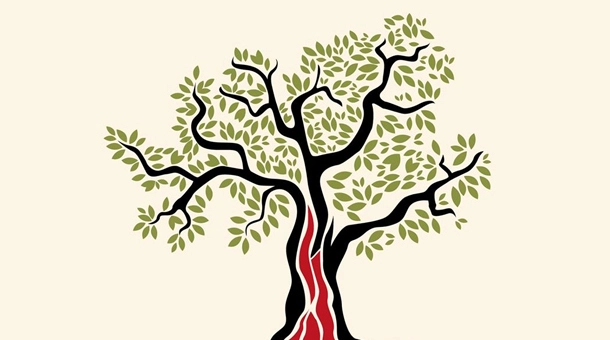

O ECOSSOCIALISMO
O ecossocialismo é uma corrente política e social que busca conciliar os aspectos ambientais e sociais em um modelo de desenvolvimento sustentável. Diferentemente do desenvolvimento sustentável convencional, o ecossocialismo enfatiza a necessidade de superar as desigualdades sociais e as injustiças ambientais, considerando que essas questões estão intrinsecamente ligadas. Assim, o objetivo do ecossocialismo é promover um modelo de desenvolvimento que leve em conta as limitações ecológicas do planeta, ao mesmo tempo em que garanta uma distribuição justa dos recursos e benefícios sociais. Isso implica na construção de uma sociedade mais igualitária, que priorize o bem-estar coletivo em detrimento do lucro individual.
ARTIGOS RELACIONADOS
-
Ecossocialismo e TI
Para a implementação do ecossocialismo, as soluções tecnológicas são fundamentais.
-

Pensadores Brasileiros
O ecossocialismo tem sido objeto de reflexão por diversos pensadores brasileiros, que buscam uma interpretação crítica da realidade
-

Lutas Ecossocialistas
O ecossocialismo é uma corrente política que busca uma transformação profunda das relações sociais e produtivas